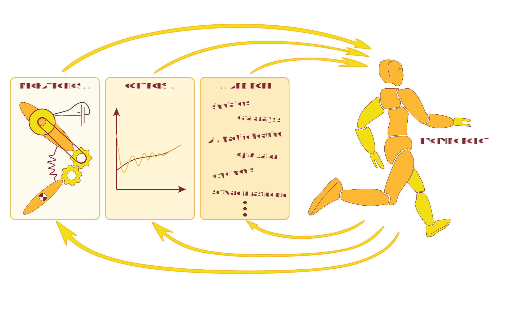

About the workshop
Humanoid and other legged robots are highly complex machines. Even more complex, however, is their development. The iterative process of designing robots includes knowledge from all disciplines within the field of robotics, from mechatronic design towards planning and controls. Similar to the curse of dimensionality in learning and optimization (which may very much be part of the development process as well), there exists a kind of "curse of possibilities" – as paradoxical as that may sound: For any one of the more or less complex components and sub-solutions of the robot, there exist a multitude of possible options. Eventually, the design team needs to pick out of those options a set that will work well together, which is a complex combinatorial problem. The design space associated to the development of a new robot is simply vast. Thus, to create and build a humanoid robot, adequate development and design pipelines and principals are required. This workshop addresses this issue by bringing together an interested audience with several experienced speakers and presenters, who share their related insights and give an overview of the design pipelines they use (or have used) to successfully develop humanoid / legged robots or other highly complex machines.
